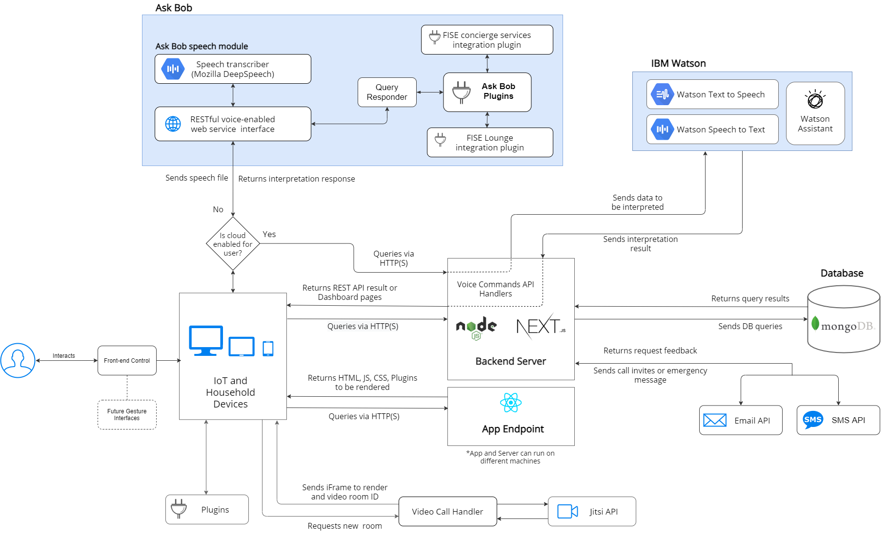
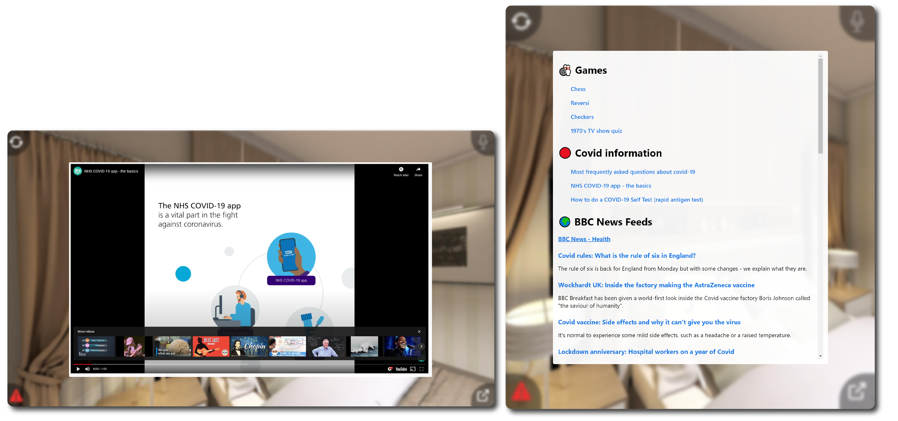

IBM FISE Lounge is an application that acts as a smart, privacy-safe, and interactive video-calling platform for the elderly and others to use in the current pandemic, and other situations where social isolation is a major issue. It provides a simple interface with a standalone administrative dashboard for more tech-savvy relatives to set up the Lounge app and preferences on the elderly relative's behalf.
The application is a part of the integrated FISE Ecosystem that includes FISE AskBob and FISE Concierge.

This project has been developed by a group of students at University College London, supervised by Dr Dean Mohamedally (UCL) and John McNamara (IBM)
This repository contains both the web app for FISE (in /app) as well as the administrative dashboard and API (in /server).
Application is a React app (/app/)
./public/./src/pages/./src/components/./src/utils/./src/styles/./test/./.env.local.example (must be renamed to .env.local on deployment)Server is a Next.js app (/server/)
./public/./src/pages/ and ./src/pages/dashboard./src/components/./src/pages/api./src/utils/./src/lib/./.env.local.example (must be renamed to .env.local on deployment)Below is the System Architecture Diagram:

We recommend you to use docker for production deployment on user devices as it is privacy-safe due to all services running locally. Docker will install the app, server, FISE AskBob and FISE concierge together. If you're on a Windows device we have provided a batch file that will get everything up and running with one-click. You can find our guide on how to install and deploy docker here in the docker branch. If the link doesn't work, switch to the docker branch and enter docs/docker_installation/docker_installation.md.
If you are currently in the docker branch, and you have docker installed, you can either run the docker.bat (Windows only), or write the following commands in your terminal:
docker-compose up
Note: don't forget that you need to fill in the environment variables (.env.files) for both the /server and /app before running docker. You can create the .env.files that need to be filled in by running create-env-files.bat (Windows only) or you can write the following in your terminal
cd app
cp cp .env.local.example .env.local
cd ..
cd server
cp .env.local.example .env.local
If you want to use the MongoDB database that is built inside the container the following credentials in \server\env.local
MONGODB_URI="mongodb://mongo:27017"
MONGODB_DB="mongo"
Note: Our documentation uses yarn commands, but npm will also work. You can compare yarn and npm commands in the yarn docs, here.
Ensure you have yarn installed (or npm)
cd serveryarn installcp .env.local.example .env.local (This file should never be tracked, only the example)server/.env.local, follow the Environment Variables guideyarn devyarn buildyarn startEnsure you have yarn installed (or npm)
cd appyarn installcp .env.local.example .env.local (This file should never be tracked, only the example)app/.env.local, follow the Environment Variables guideyarn devyarn buildyarn startNote: There are many ways to deploy both the app and server, you are not restricted to using the services we mention.
Easiest way (local): Docker
Easiest way (cloud): Vercel
/server/.env.local.exampleVERCEL_URL will autopopulate based on whether the build is production or preview)Otherwise (cloud): Azure, DigitalOcean, AWS, IBM Cloud etc.
Easiest way (local): Docker
Easiest way (cloud): Vercel
/app/.env.local.exampleOtherwise (local):
Otherwise (cloud): Azure, AWS, IBM Cloud (Virtual Machines) and similiar
Env variables follow the KEY=VALUE format. A VALUE that contains white-spaces must be wrapped in quotes (i.e. KEY="VALUE WITH WHITESPACE").
Server:
JITSI_MEET_URL: URL of Jitsi Meet instance (can use meet.jit.si).
SESSION_COOKIE_SECRET: a 32-digit base 10 number, used for encrypting the session cookie.
NEXT_PUBLIC_APP_URL: URL of running app instance (used for adding link to app from dashboard pages).
Database Env Variables:
MONGODB_URI: URI of MongoDB database instance (i.e. for Docker mongodb://mongo:27017). Might need to add database name at the end of the URI path as such mongodb://mongo:27017/databaseName.MONGODB_DB: MongoDB Database name (in HTML URL Encoding format).SMS & Email Env Variables:
EMAIL_HOST: email service provider host URL.
EMAIL_PROVIDER_USERNAME: email from the service provider (i.e. example@example.uk).
EMAIL_PROVIDER_PASS: password of the email account or external password from the service provider.
EMAIL_FROM: email sender name, appears as sender in emails.
SMS_ENDPOINT: SMS API endpoint (we recommend using D7SMS).
SMS_API_KEY: SMS API key provided
SMS_FROM: sender name, appears as sender in sent SMS messages.
IBM Watson Env Variables:
STT_ENDPOINT: Watson Speech to Text endpoint URL.
STT_API_KEY= Watson Speech to Text API key.
WATSON_ENDPOINT: Watson Assistant enpoint URL.
WATSON_API_KEY: Watson Assistant API key.
WATSON_ASSISTANT_ID: Watson Assistant instance ID (find how to get the Watson Assistant instance ID, here).
TTS_ENDPOINT: Text to Speech endpoint URL.
TTS_API_KEY="48Lqv3DPHQzjbc9pVP7lU_kVlY0UPngbiiQ_flyUWMbg"
IBM Watson Docs on how to get started with Watson services:
Askbob Env Variables:
ASKBOB_ENDPOINT: URL of Ask Bob running instance (i.e. with Docker http://localhost:8000)Application:
REACT_APP_SERVER_URL: URL of server (used as target URL for Server API request)REACT_APP_ASKBOB_URL: URL of running Ask Bob instance (used as target URL for voice command requests)Modern technologies - Running on React.
No complex login - Consumers only need to enter their One-Time Code, which will be cached to the browser.
Personalize your Lounge - Customizable and interactive 360-VR, static or URL backgrounds, custom profile images for contacts.
Research grade UI - UI design based on gerontological research, optimized for improving elderly's experience.
Voice commands - Responsive voice commands that provide consumers their personal AI assistant. The Ask Bob assistant option provides additional functionality while also implementing privacy measures.
Extensible Plugins - The lounge experience enables consumers to access BBC live news feed, online games such as chess, checkers, 70's TV Show Quiz, embedded videos and website pages from the Plugins panel. Moreover, plugins have been designed to allow further development and enable clients to modify the application to suit their needs.
Reliable videocalling - Consumers can call contact their dearest through the Jitsi video-calling API.
Privacy-safe - Privacy features that keep user data locally, far from cloud and external sources by running the application locally together with its services. If Ask Bob and local speech synthesis are enabled by the administrator, data will not leave the device.
Integrated in FISE ecosystem - Voice commands enbale consumers to access the feature rich APIs of the FISE ecosystem such as Concierge while also keeping privacy first.
Simple installation process - We provide detailed installation guide for deploying the application locally on devices. In addition, "one-click" installation scripts are provided to facilitate this process.
Modern technologies - Running on NextJS 9 (different to Express, look it up and be familiar with ES5/ES6 syntax).
Option rich dashboard - Consumers' experience is easily customizable by the account administrator from the dashboard. Options include using Ask Bob or IBM Watson assitant services, using IBM Watson Text-to-Speech features or the WebAPI Speech Synthesizer available in most browsers, easily customize backgrounds and contacts data or profile images, etc.
Privacy-safe - Encrypted session cookies for holding sensitive information locally. Authentication handled by Passport and sign-up by the Crypto Node.js module. Storage in MongoDB can be deployed as a local service on the device, removing data exposure.
API - Enables option configuration and account creation by proxying client requests to our database.
Email & SMS API - Send SMS and email invitations for videocalling on consumer demand. In addition, our emergency system can alert the contacts of a consumer who is in need of help through the SMS & email API.
If phone number provided:
/api/loginParameters:
Success:
200{ "done": true }/api/logoutParameters: None
Success:
304Location header redirects root URL //api/signupParameters:
Success:
200{ "done": true }/api/userGets the current (based on session) user's data
Success:
200{ data: { user: { name, email, consumers }}}User not found or no database access:
200{ data: null, message: "Unauthorized" }/api/user/deleteRevokes the current user's session
Success:
200{ message: "Deleted successfully" }/api/consumerCreate a new consumer
Paramaters:
Success:
200{ message: "Consumer added successfully", data: consumer }/api/consumer/:consumer_idGet the corresponding consumer data
Success:
200{ message: "Consumer Data found", data: consumer }Update the corresponding consumer's data
Parameters:
Success:
200{ message: "Consumer updated successfully", data: { ...consumer, consumer_id }, }Delete the corresponding consumer
Success:
200{ message: "Consumer Deleted successfully" }Refreshes one-time-code of the corresponding consumer
Success:
200{ message: "Consumer updated successfully", data: { ...consumer, consumer_id }, }/api/contactCreate a new contact
Parameters:
Base64 encoded)/^\+[1-9]\d{1,14}$/)Success:
200{ message: "Contact added successfully", data: newContact }Contact already exists:
400{ message: "A contact with that email already exists" }/api/contact/:contact_idGet the corresponding contact data
Success:
200{ message: "Contact Data found", data: { contact, consumer_id, consumer_name }Update the corresponding contact's data
Parameters:
Base64 encoded)/^\+[1-9]\d{1,14}$/)Success:
200{ message: "Contact updated successfully", data: { newContact, consumer_id }Delete the corresponding contact
Success:
200{ message: "Contact Deleted successfully", data: { consumer_id }}/api/otc/:otcGet the corresponding consumer's data
Success:
200{ message: "Data found", data: consumer }Sends a call notification email and/or SMS to the desired contact
Parameters:
contact_id=[string]
Optional:
Success:
200{ message: "Invite email Sent successfully" }On both email and SMS services error:
500{ message: "Both email and sms services are not responding" }/api/otc/watson/:otcParse audio through IBM Watson API
Parameters:
req.body should be Base64 encoded audio/mp3Success:
200{ data: { action, contact_id, text, reply }}
"startCall" | "changeBackground" | "startExercise"]"startCall", the contact_id of the calleeNo intent recognized by Watson Assistant:
200{ message: "Watson couldn't recognize intents", data: { action, contact_id, text, reply }}/api/otc/text-to-speech/:otcSynthesize speech from text
Parameters:
Success:
200audio/wav/api/otc/emergency/:otcSend emergency message to all contacts
Parameters:
Success:
200{ message: "Invite Sent successfully" }On both email and SMS services error:
500{ message: "No emergency message was sent" }/api/backgrounds/Adds corresponding background to consumer's backgrounds
Parameters:
Base64 encoded or URL string)Success:
200{ message: "New background uploaded successfully" }Deletes the corresponding background
Parameters:
Success:
200{ message: "Background deleted successfully", }.env.local.WATSON_ASSISTANT_ID only add key following ServiceId-XXXXXXXX-XXXX-XXXX-XXXX-XXXXXXXXXXXXwatson_skill.json that you find in the /server folderIf you want any other custom commands, you can create using IBM watson dialogues. Read this guide to get started.
app/.env.local
The Plugin component is app/components/Plugin.jsx. This is wrapped by the app/components/PluginComponent.jsx component in an iframe.
To add new plugins, modify the return value of the Plugin component by adding your custom html and JS. If any variable initialization is needed, it can be added to the useEffect hook of the component.
We have provided an example of the things you can achieve with Plugin, these include online games (chess, checkers, 70's TV Show, etc.), live BBC news feed, Coronavirus informational videos, etc.